A picture is worth a thousand words. Good visualizations speak for themselves saving the expensive stakeholders' time while presenting a data project. Unfortunately, raw data exploration plots are not suitable for sharing with audience no matter how good the visualization library is. The visualizations require fine tuning to make them easy to navigate for an untrained eye. Otherwise, a large chunk of the meeting is wasted on explaining what is on the plot rather than talking about the implications. Though tempting, such tradeoff can push a decision on a critical project by weeks or months.
In this blog, I will share the pieces of code that make visualizations easier to read and approaches for saving time while putting the corresponding code together. The material is intended for the Data Scientists who spend significant time exploring the data and using the results to help stakeholders make business decisions.
Python community owns a number of powerful visualization libraries.
Seaborn,
Plotly,
Altair,
Pygal, and
Plotnine are among the
many others. The libraries compete in how much insights they can cram in
one graph with a single plot command. This helps
tremendously in data exploration and discussing intermediate results
with fellow data scientists. However, the business stakeholders get
confused with the complexity of such elaborate visualizations especially
if presented in a raw form. They did not read the dataset documentation
to guess that cty on x axis is the fuel consumption in
the city, may not be aware of the average for the industry to compare it
with, or did not have a training about where to look at in a box plot.
It is on us to make the graphs easy to read. I data professional is
responsible for focusing stakeholders' attention on the things they want
to know. This last mile from a flashy picture to an informative graph
requires a significant effort.
Let's say, I found a function from a new visualization library that fits perfectly to my data and renders the following plot that I found in this article:
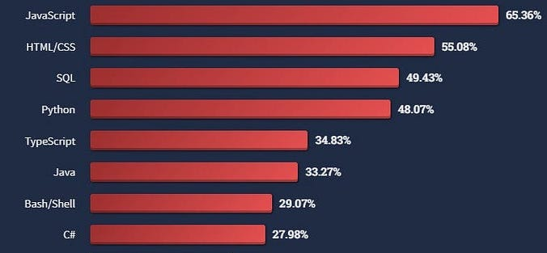
Looks slick, but I will have to spend time explaining what was
measured for each of the programming languages. Even after that, it is
unclear what message I want to get across and where to look for
justification. Each mental step that a stakeholder has to take while
reading the plot increases the chances of misinterpretation and the
overall confusion. Such simple steps as adding an x label or writing a
title do the job but get often omitted. Memorizing the corresponding
commands for each new library or googling the documentation every time
is not impossible but tedious. Instead, I want concentrate on the tricks
that cover the last mile using the standard matplotlib
library. There are two reasons for that:
matplotlib as
a backbone. This means that the generated image can then be finished off
in the same way as if it was generated with matplotlib
itself. matplotlib provides
all the essential visualization functionality. The result might not be
as flashy or interactive but has all the means for bringing the point
across efficiently. For example, the above visualization can be
delivered with the standard library in the way shown below. import matplotlib.pyplot as plt
programming_languages = ('JavaScript',
'HTML/CSS',
'SQL',
'Python',
'TypeScript',
'Java',
'Bash/Shell',
'C#')
past_year_use = (65.36, 55.08, 49.43, 48.07, 34.83, 33.27, 29.07, 27.98)
plt.barh(programming_languages, past_year_use)
plt.show()The bare bones plot with matplotlib contains exactly the
same information but looks even less intuitive then the original image.
The following section will cover the steps on how to make this plot easy
to read. The section after that will show ways of saving time on the
tuning process.
The resulting plot will only appear on slides or in documentation if it was saved in a file. However, the default saving options need adjustments more often than not. Default framing settings can cut parts of the header out of image while the default resolution settings can result in a pixelated outcome.
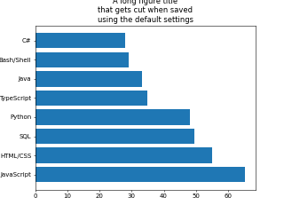
It is our responsibility to make sure the final result looks good on
the screen where it is presented. The bbox_inches='tight'
parameter makes every piece of the plot fit and cuts the excessive white
space. The dpi parameter controls the resolution.
Increasing the dpi value results in less blurry images in
expense of the increasing file size.
plt.savefig('pics/demo_bar_plot_save.png', bbox_inches='tight', dpi=300)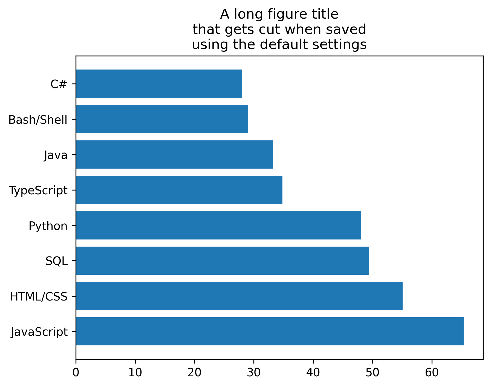
Plot size should be proportional to the amount of information we want to convey. Stretching the bars across the default size figure will only eat up the space without adding any value like in the following example from here:
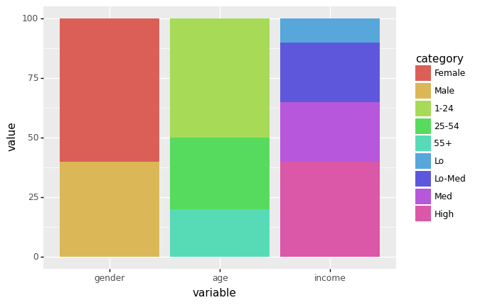
The following piece of code placed before the plotting function will set the figure width to 5 inches and height to 3 inches:
plt.figure(figsize = (5,3)) # set the figure size (Width, Height)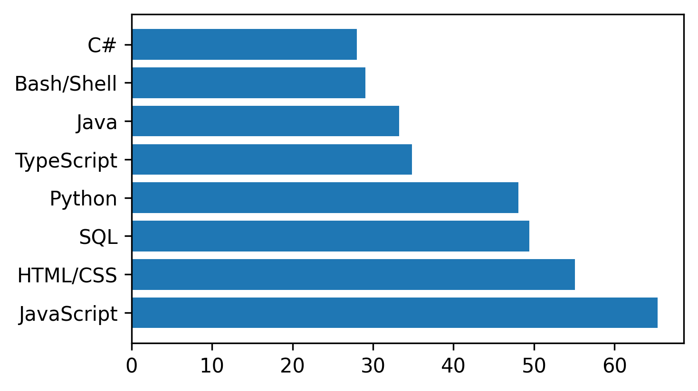
# plot preparation
fig = plt.figure(figsize = (5,3)) # set the figure size (Width, Height)
ax = plt.gca() # get the axis from the plot
# plotting
handle_bars = plt.barh(programming_languages, past_year_use) # the plot
plt.savefig('pics/demo_bar_plot_fs.png', bbox_inches='tight', dpi=300)
plt.show()The plot should inform the viewer about its content. Most visualization tutorials describe only the part of putting a graph together while leaving the context dependent code up to the readers. The following example from this tutorial does its job demonstrating the library capability. However, it should never appear on presentation slides in its raw form:
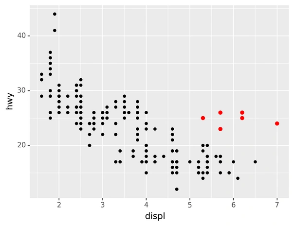
plt.title('Less than half developers used Python\n'
'in their projects in the past year')
plt.xlabel('Percentage of developers')
plt.ylabel('Programming Language')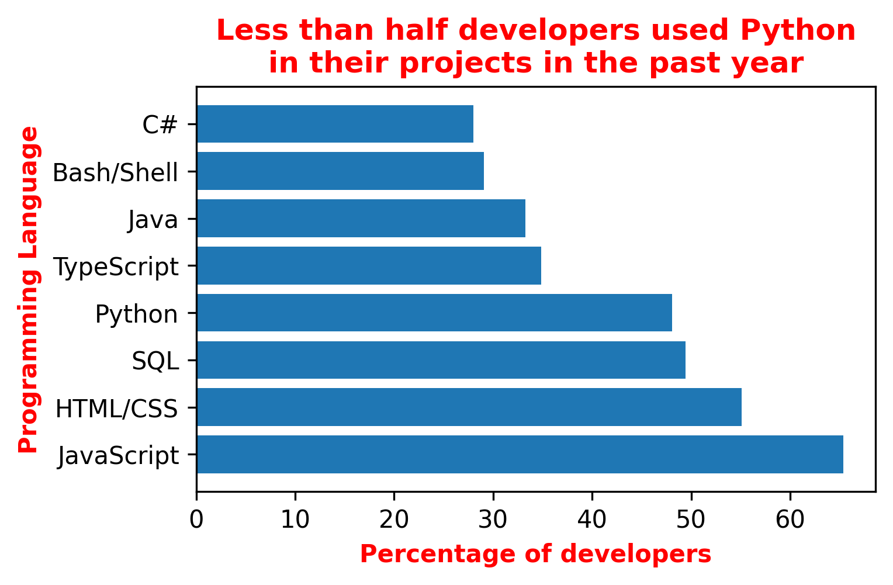
This will still force my reader to make an effort finding the Python bar and comparing its length to the others but the focus is already there.
# plot preparation
fig = plt.figure(figsize = (5,3)) # set the figure size (Width, Height)
ax = plt.gca() # get the axis from the plot
# plotting
handle_bars = plt.barh(programming_languages, past_year_use) # the plot
# fine tuning
highlighting = {'color':'red', 'fontweight':'bold'}
plt.title('Less than half developers used Python\n'
'in their projects in the past year',
**highlighting)
plt.xlabel('Percentage of developers', **highlighting)
plt.ylabel('Programming Language', **highlighting)
plt.savefig('pics/demo_bar_plot_ttl.png', bbox_inches='tight', dpi=300)
plt.show()Grid lines help perceive the differences between the values on a plot. The effect is similar to how the lines on the football field help referees spot the differences between players' positions when calling offsides.
The following command sets the grid:
plt.grid(True) # show the gridHowever, the grid lines show up on the top of the bars by default. And that looks ugly. The fix requires extracting the axis object from the plot first before setting the grid below the bars:
ax = plt.gca() # get the axis from the plot
ax.set_axisbelow(True) # set grid lines to the background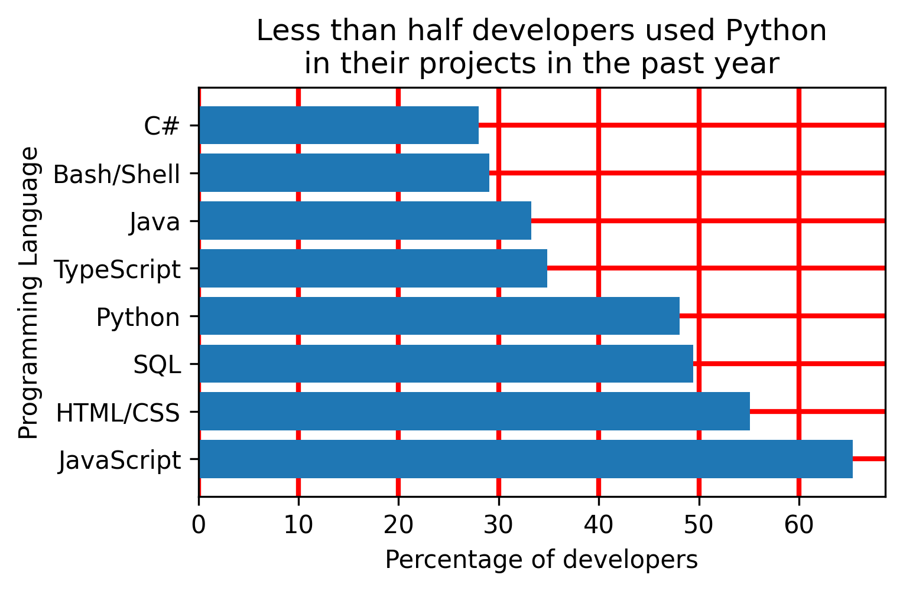
# plot preparation
fig = plt.figure(figsize = (5,3)) # set the figure size (Width, Height)
ax = plt.gca() # get the axis from the plot
# plotting
handle_bars = plt.barh(programming_languages, past_year_use) # the plot
# fine tuning
plt.title('Less than half developers used Python\n'
'in their projects in the past year')
plt.xlabel('Percentage of developers')
plt.ylabel('Programming Language')
plt.grid(color='red', linewidth=2) # show the grid
ax.set_axisbelow(True) # set grid lines to the background
plt.savefig('pics/demo_bar_plot_gl.png', bbox_inches='tight', dpi=300)
plt.show()Reading the numeric value takes two steps: reading the number from
the ticks and reading the measurement unit from the label. We can cut
one mental step by adding the measurement unit to the tick value. The
following trick involves defining a function that takes 2 arguments
(tick value and tick sequence number) to generate a replacement. That
replacement is then applied it to the axis of interest
(xaxis or yaxis):
add_percentage = lambda value, tick_number: f"{value:.0f}%" # function that adds % to tick value
ax.xaxis.set_major_formatter(plt.FuncFormatter(add_percentage)) # apply the tick modifier to x axis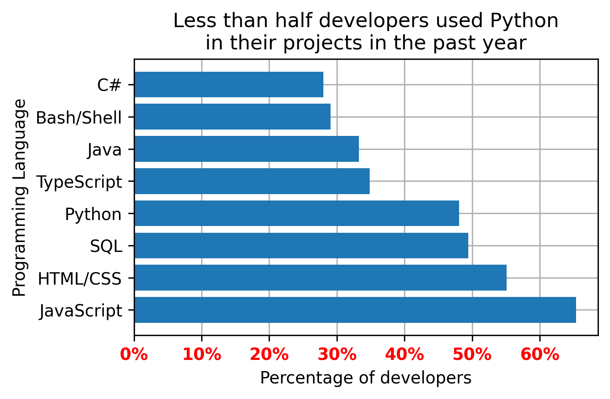
Single symbol measurement units like the percentage sign or the
currency look better when attached to the number. Multiple symbol units
make the axis look overcrowded and should thus be avoided along with the
measurement units like l or S that can be
confused with the numbers.
# plot preparation
fig = plt.figure(figsize = (5,3)) # set the figure size (Width, Height)
ax = plt.gca() # get the axis from the plot
# plotting
handle_bars = plt.barh(programming_languages, past_year_use) # the plot
# fine tuning
plt.title('Less than half developers used Python\n'
'in their projects in the past year')
plt.xlabel('Percentage of developers')
plt.ylabel('Programming Language')
plt.grid(True) # show the grid
ax.set_axisbelow(True) # set grid lines to the background
ax.set_xticklabels(ax.get_xticks(), color='red', weight='bold')
add_percentage = lambda value, tick_number: f"{value:.0f}%" # function that adds % to tick value
ax.xaxis.set_major_formatter(plt.FuncFormatter(add_percentage)) # apply the tick modifier to x axis
plt.savefig('pics/demo_bar_plot_tl.png', bbox_inches='tight', dpi=300)
plt.show()Points of reference help navigate the audience around the expectations like the sales goal, an industry standard, the end of quarter, or something of high importance. Adding a reference point explicitly saves efforts in making sense of the plot.
I added a vertical line at 50% of programmers who used a programming language. This makes it easier to get an understanding of the graph and to make the right conclusions without looking at the numbers (e.g. less than 50% of the programmers use Python).
plt.axvline(50, color='m', ls='--') # 50% cutoff vertical line (axhline for horizontal)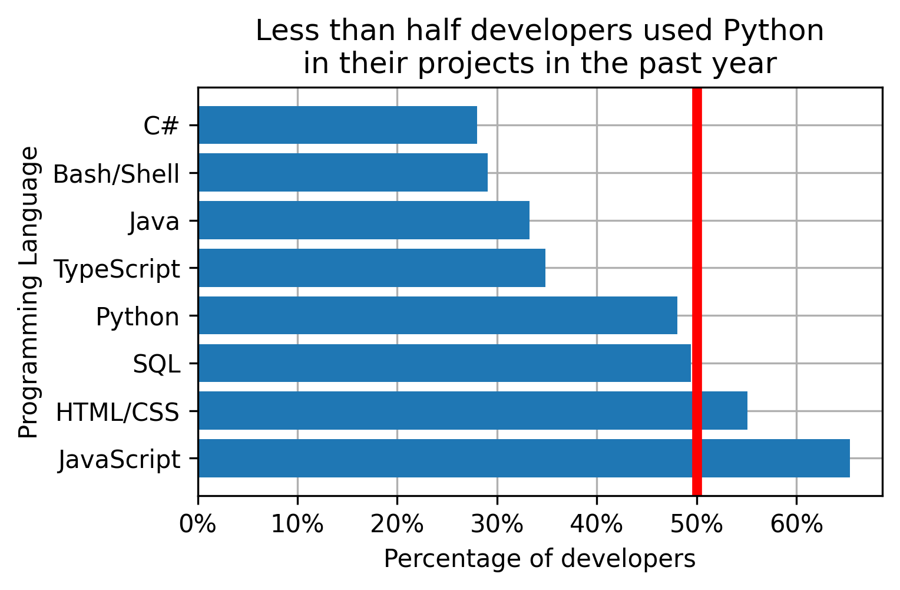
# plot preparation
fig = plt.figure(figsize = (5,3)) # set the figure size (Width, Height)
ax = plt.gca() # get the axis from the plot
# plotting
handle_bars = plt.barh(programming_languages, past_year_use) # the plot
# fine tuning
plt.title('Less than half developers used Python\n'
'in their projects in the past year')
plt.xlabel('Percentage of developers')
plt.ylabel('Programming Language')
plt.grid(True) # show the grid
ax.set_axisbelow(True) # set grid lines to the background
add_percentage = lambda value, tick_number: f"{value:.0f}%" # function that adds % to tick value
ax.xaxis.set_major_formatter(plt.FuncFormatter(add_percentage)) # apply the tick modifier to x axis
plt.axvline(50, color='r', linewidth=4) # 50% cutoff vertical line (axhline for horizontal)
plt.savefig('pics/demo_bar_plot_rp.png', bbox_inches='tight', dpi=300)
plt.show()A legend names different layers of the plot. The default order of the layers can be mixed up. In such cases individual layers can be identified through the corresponding handles and added individually with the corresponding names. In my example, the legend for the bars themselves will not add value while taking space, but the reference line should be annotated. The location argument helps positioning the legend in a way that does not obstruct the areas of high importance.
handle_vline = plt.axvline(50, color='m', ls='--') # 50% cutoff vertical line (axhline for horizontal)
plt.legend([handle_vline], # layers handles
['majority cutoff'], # layers names
loc='upper right') # legend position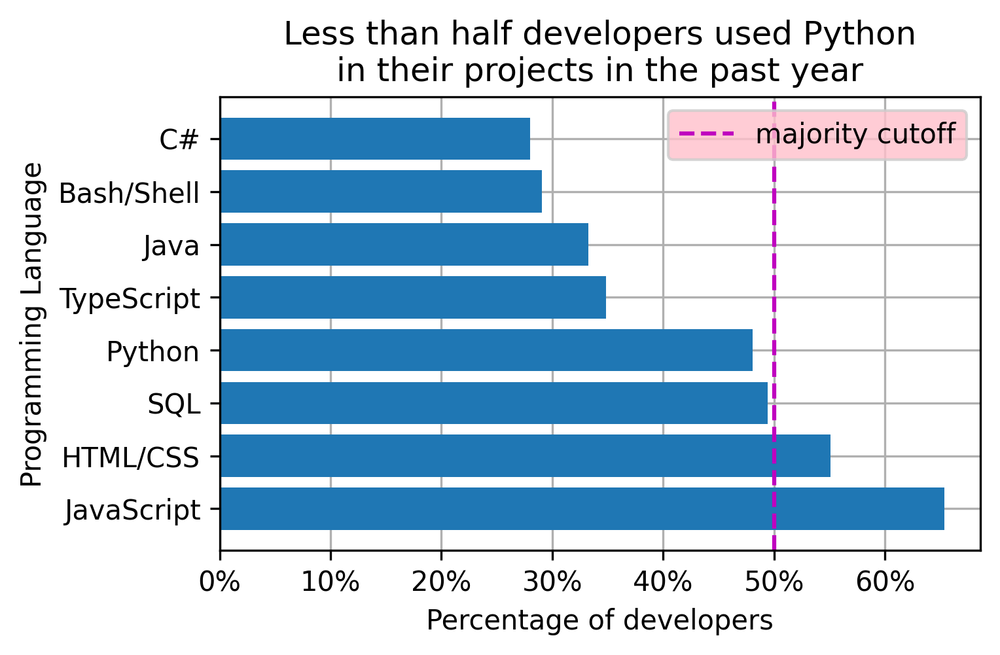
# plot preparation
fig = plt.figure(figsize = (5,3)) # set the figure size (Width, Height)
ax = plt.gca() # get the axis from the plot
# plotting
handle_bars = plt.barh(programming_languages, past_year_use) # the plot
# fine tuning
plt.title('Less than half developers used Python\n'
'in their projects in the past year')
plt.xlabel('Percentage of developers')
plt.ylabel('Programming Language')
plt.grid(True) # show the grid
ax.set_axisbelow(True) # set grid lines to the background
add_percentage = lambda value, tick_number: f"{value:.0f}%" # function that adds % to tick value
ax.xaxis.set_major_formatter(plt.FuncFormatter(add_percentage)) # apply the tick modifier to x axis
handle_vline = plt.axvline(50, color='m', ls='--') # 50% cutoff vertical line (axhline for horizontal)
plt.legend([handle_vline], # layers handles
['majority cutoff'], # layers names
loc='upper right', # legend position
facecolor='pink')
plt.savefig('pics/demo_bar_plot_lgnd.png', bbox_inches='tight', dpi=300)
plt.show()The above manipulations are applicable to the major plot types including line plots, bar plots, box plots, etc. Plot specific manipulations can also help in delivering the message. The horizontal bar plot from my example can benefit from highlighting the bar of interest, listing the bars in a descending order, and adding the values numbers to the bars.
python_ix = programming_languages.index('Python') # find the Python bar position
handle_bars[python_ix].set_color('C2') # set the Python bar to a different color
ax.invert_yaxis() # make bars display from top to bottom vs the default
for pos, val in enumerate(past_year_use): # print values on the bars
ax.text(val, pos, f'{val:.0f}% ',
verticalalignment='center', horizontalalignment='right',
color='white', fontweight='bold')
plt.box(False) # turn off the box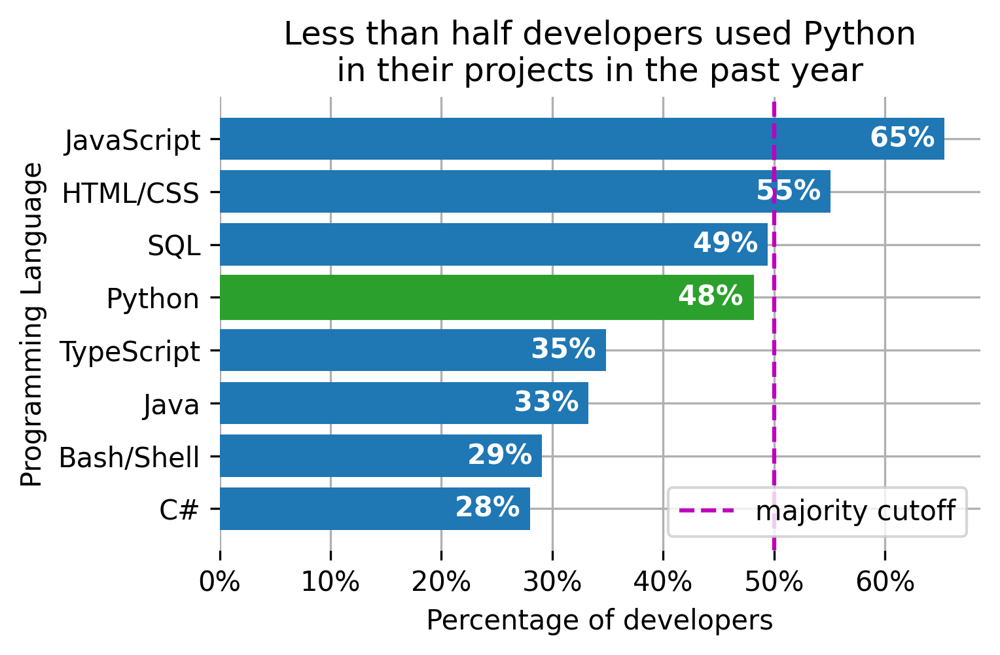
# plot preparation
fig = plt.figure(figsize = (5,3)) # set the figure size (Width, Height)
ax = plt.gca() # get the axis from the plot
# plotting
handle_bars = plt.barh(programming_languages, past_year_use) # the plot
# fine tuning
plt.title('Less than half developers used Python\n'
'in their projects in the past year')
plt.xlabel('Percentage of developers')
plt.ylabel('Programming Language')
plt.grid() # show the grid
ax.set_axisbelow(True) # set grid lines to the background
add_percentage = lambda value, tick_number: f"{value:.0f}%" # function that adds % to tick value
ax.xaxis.set_major_formatter(plt.FuncFormatter(add_percentage)) # apply the tick modifier to x axis
handle_vline = plt.axvline(50, color='m', ls='--') # 50% cutoff vertical line (axhline for horizontal)
plt.legend([handle_vline], # layers handles
['majority cutoff'], # layers names
loc='lower right') # legend position
# plot specific modifications
python_ix = programming_languages.index('Python') # find the Python bar position
handle_bars[python_ix].set_color('C2') # set the Python bar to a different color
ax.invert_yaxis() # make bars display from top to bottom vs the default
# print values on the bars
for pos, val in enumerate(past_year_use):
ax.text(val, pos, f'{val:.0f}% ',
verticalalignment='center', horizontalalignment='right',
color='white', fontweight='bold')
plt.box(False) # turn off the box
plt.savefig('pics/demo_bar_plot.png', bbox_inches='tight', dpi=300)
plt.show()The plot manipulations code above might seem custom. In reality, most of the commands stay the same from one graph to another while the functions' parameters change based on the data at hand. I will use the earlier mpg example to demonstrate this effect. The resulting plot looks as follows:
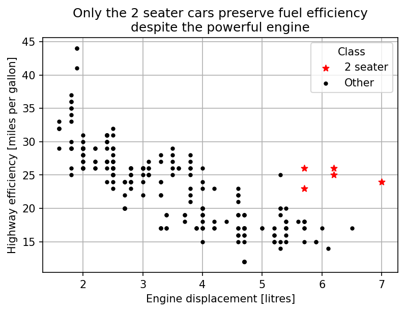
title parameter for the legend. The resulting code is
shown below.
import pandas as pd
import matplotlib.pyplot as plt
df_mpg = pd.read_csv("https://vincentarelbundock.github.io/Rdatasets/csv/ggplot2/mpg.csv", index_col=0)
df_2seaters = df_mpg[df_mpg['class'] == '2seater']
df_other = df_mpg[df_mpg['class'] != '2seater']
# plot preparation
plt.figure(figsize = (6,4)) # set the figure size (Width, Height)
ax = plt.gca()
# plotting
handle_2seater = plt.scatter(df_2seaters['displ'], df_2seaters['hwy'], color='red', marker='*')
handle_other = plt.scatter(df_other['displ'], df_other['hwy'], color='black', marker='.')
# fine tuning
plt.title('Only the 2 seater cars preserve fuel efficiency\n'
'despite the powerful engine')
plt.xlabel('Engine displacement [litres]')
plt.ylabel('Highway efficiency [miles per gallon]')
plt.grid(True)
ax.set_axisbelow(True)
plt.legend([handle_2seater, handle_other], ['2 seater', 'Other'], title='Class')
plt.savefig('pics/2seater.png', bbox_inches='tight', dpi=150)
plt.show()The examples above demonstrated that some standard commands are frequently used. Memorizing that code is not the biggest problem. The main problem is that it takes a long time to put together the same lines with slight changes for each plot. I will propose several strategies for reducing the amount of effort required to memorize and put together the code.
Default plot settings can be changed in one place and propagated to all the downstream figures in a jupyter notebook. For example, the default grid behavior and the default figure size can be changed in the following way:
plt.rcParams['figure.figsize'] = [5, 3]
plt.rcParams['axes.axisbelow'] = True
plt.rcParams['axes.grid'] = TrueThe full list of the settings, options, and the defaults can be found here.
Rewriting the global defaults saves the coding time for the commands
that stay the same despite the context. However, the approach still
requires looking up the rcParams settings, adding these
settings to each new notebook, and typing content specific commands. The
next approach will take care of the content specific commands.
This approach will take care of content specific commands. Just save the template somewhere and copy it every time to finish the plot. Content specific parts are easy to modify without memorizing all the necessary commands. The template below works well for the majority of my cases:
# plot preparation
plt.figure(figsize = (5,3)) # set the figure size (Width, Height)
ax = plt.gca()
# plotting
# fine tuning
plt.title('Title')
plt.xlabel('x')
plt.ylabel('y')
plt.grid(True)
ax.set_axisbelow(True)
ax.xaxis.set_major_formatter(plt.FuncFormatter(lambda value, tick_number: f"{value}" ))
handle_vline = plt.axvline(50, color='r')
plt.legend([handle_vline], ['reference'], loc='best')
plt.savefig('pics/file_name.png', bbox_inches='tight', dpi=150)
plt.show()The template can be modified you use other commands quite a lot. The major inconvenience with this approach is that you have to carry the template around in a separate file and pull the code from that file every time it is needed. Not the end of the world, but annoying.
# # plot preparation
# plt.figure(figsize = (5,3)) # set the figure size (Width, Height)
# ax = plt.gca()
# # plotting
# # fine tuning
# plt.title('Title')
# plt.xlabel('x')
# plt.ylabel('y')
# plt.grid()
# ax.set_axisbelow(True)
# ax.xaxis.set_major_formatter(plt.FuncFormatter(lambda value, tick_number: f"{value}" ))
# handle_vline = plt.axvline(50, color='r')
# plt.legend([handle_vline], ['reference'], loc='best')
# plt.savefig('pics/file_name.png', bbox_inches='tight', dpi=150)
# plt.show()%macro -q -r fine_tune 10
%store fine_tune# retrieve in the new notebook if planning to use
%store -r fine_tuneFor those who would go an extra mile to make the templates available
without typing %store -r every time, there is a way to
achieve this. This command can be executed as a part of the script that
jupyter runs while opening a notebook. Run the following command to
check whether the script exists:
import os.path
ipython = !ipython locate
file_name = f'{ipython[0]}/profile_default/ipython_config.py'
os.path.isfile(file_name)If the script does not exist (the last command returned
False) the following command creates it:
!ipython profile createEdit the file from file_name the following way:
c.InteractiveShellApp.exec_lines,In my example, the following piece of code will be changed from:
# c.InteractiveShellApp.exec_lines = []to
c.InteractiveShellApp.exec_lines = [
'%store -r fine_tune'
]The following script will automate the process of adding new templates.
import os.path
new_template_names = ['fine_tune']
# config folder path
ipython = !ipython locate
file_name = f'{ipython[0]}/profile_default/ipython_config.py'
# search patterns for commented and uncommented lines
exec_line_default = '# c.InteractiveShellApp.exec_lines = []\n'
exec_line = 'c.InteractiveShellApp.exec_lines = [\n'
# create the config files if not there
if not os.path.isfile(file_name):
!ipython profile create
# read the config file
with open(file_name) as f:
lines = f.readlines()
# uncommenting the part with line execution if commented
if exec_line_default in lines:
# find the commented line
setting_position = lines.index(exec_line_default)
# replace with uncommented
lines[setting_position] = exec_line
# add the closing bracket
lines.insert(setting_position+1, ']\n')
insert_position = lines.index(exec_line) if exec_line in lines else -1
# add the template loading lines
for template_name in new_template_names:
# shape the storage request line
new_line = f" '%store -r {template_name}',\n"
# add the line if not already there
if not new_line in lines:
insert_position += 1
lines.insert(insert_position, new_line)
# write the updated config file
with open(file_name, mode='w') as f:
f.writelines(lines)Putting together a visualization that speaks for itself at a stakeholder meeting is laborious. The number and variety of context dependent commands that go with such graph makes the process hard to automate and embed in a single plotting function. Memorizing the commands is tedious. Typing these commands over and over for each new visualization is time consuming.
In this post I showed how to use code templates to save time and effort while finalizing the plot. Such template contains a set of most used commands with placeholders for the context dependent parts. I also showed how to load the template code fast using a jupyter magic.